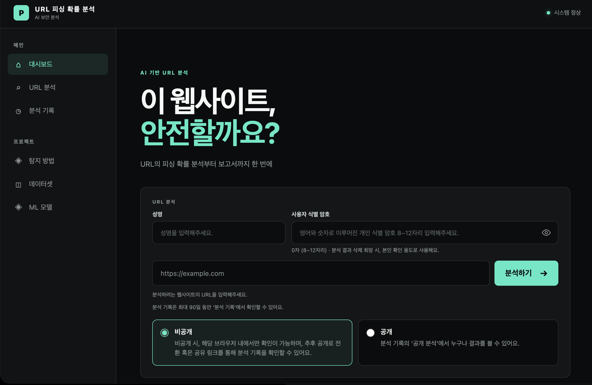
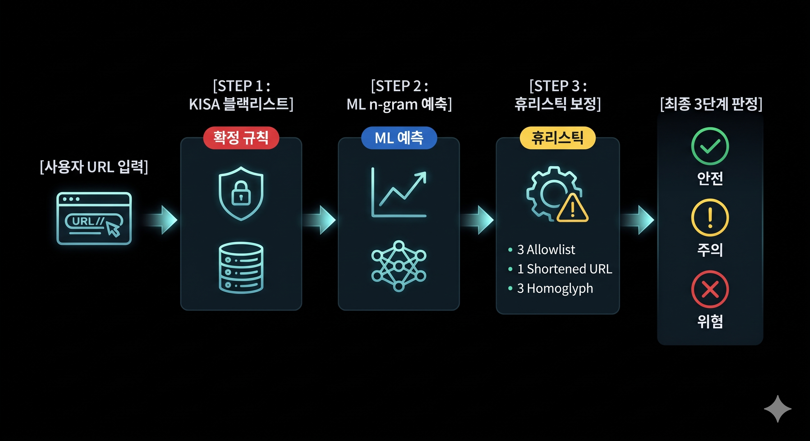
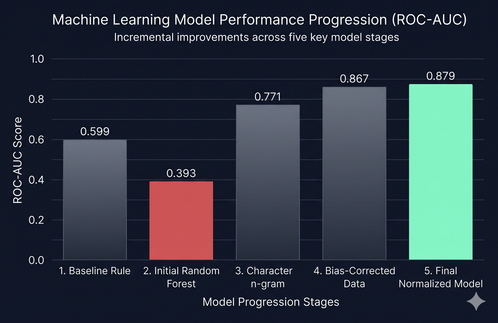
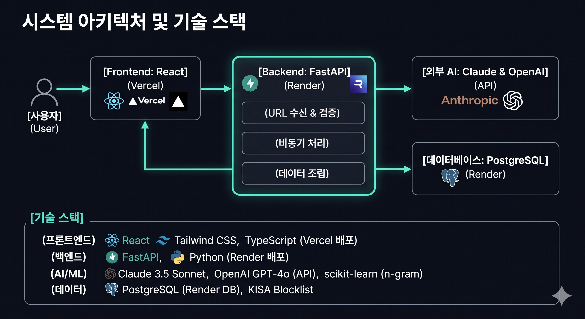

URL 피싱 확률 분석 서비스
링크를 눌러도 되는지, 지금 무엇을 해야 하는지 알려 주는 AI 기반 피싱 대응 서비스
배포 URL: phishing-link-checker-five.vercel.app

목차 (Contents) 총 8개 핵심 발표 파트
기획 배경 및 문제 정의
정교한 피싱 위협
택배 배송, 계정 정지, 환급금 안내 등 공공기관·기업을 사칭한 스미싱 문자가 일상적으로 범람
일반인의 식별 한계
복잡하고 교묘하게 조작된 URL 주소만으로는 일반 사용자가 위험성을 스스로 판별할 수 없음
치명적 피해 직결
링크 클릭 단 1회로 계정 탈취, 개인정보 유출, 금융 자산 탈취 등의 막대한 피해로 직결
타겟 사용자 및 서비스 차별점
🎯 타겟 사용자 페르소나
문자·메신저로 링크를 받아 불안하지만 진짜인지 확신이 없는 일반 인터넷 사용자
✨ 기존 도구와의 차별성
- ✓ 직관적 3단계 판정: 안전/주의/위험 신호등 및 행동 지침
- ✓ 사후 대응 가이드: "이미 눌렀다면?" 조치 및 118·112·1332 연동
- ✓ 비접속 안전 검사: 의심 사이트 직접 미접속, 공개 평판만 조회
핵심 설계 원칙: AI는 판정하지 않는다
생성형 LLM에 판정까지 맡기면 호출마다 결과가 달라지고, 그럴듯한 거짓말(환각)로 인해 위험한 링크를 신뢰하게 되는 치명적 보안 사고가 발생합니다. 따라서 아키텍처를 엄격히 분리했습니다.
판정 레이어 (점수 산출)
KISA 블랙리스트 및 검증된 ML 모델·규칙 엔진만 담당. 항상 일관된 결과 보장
설명 레이어 (문장 생성)
확정된 판정의 근거를 RAG 가이드와 엮어 일반 사용자의 눈높이에 맞춘 해설 역할로만 제한
판정 파이프라인 및 다층 방어 구조
사용자 입력 URL부터 KISA 블랙리스트, ML n-gram 예측, 휴리스틱 보정을 거쳐 최종 3단계 판정에 이르는 다층 방어 흐름

머신러닝 판정 모델 고도화 (AUC 0.879)
초기 랜덤 포레스트 모델의 정상 URL 편향 한계를 극복하기 위한 데이터셋 보정(~15.3만 건) 및 문자 n-gram 도입 결과

RAG 기반 출처 검증 및 환각 차단
🔍 TF-IDF 공식 가이드 검색
KISA 보호나라, 금감원, 경찰청 등 10대 공식 대응 가이드를 외부 임베딩 API 비용 없이 TF-IDF로 초고속 검색하여 정확한 가이드 주입
🛡️ 서버 출처 자동 검증 게이트
출처 번호 누락, 근거 없는 임의 숫자나 전화번호·주소가 포함된 LLM 출력을 서버가 엄격히 검사하고 실패 시 템플릿으로 즉시 대체
다단계 리포트 워크플로우 & 자동화 루프
📄 다단계 AI PDF 리포트
후속 조치 조사 LLM과 리포트 작성 LLM 연동, 검증된 안전한 값으로 조립하여 ReportLab으로 PDF 생성
🔄 피드백 순환 루프 (Human-in-the-Loop)
"이 판정이 틀렸나요?" 의견 접수 ➔ Resend 알림 ➔ 관리자 검토 ➔ 블랙리스트 예외 및 재학습 반영

시스템 아키텍처 및 기술 스택
Frontend: React 19, Vite (Vercel)
Backend: Python, FastAPI (Render)
AI/ML: Claude 3, OpenAI GPT-4
Database: PostgreSQL (Render DB)
Infrastructure: Vercel, Render, Resend
ML Core: scikit-learn (n-gram)

사용자 피드백 및 UX 개선 (멘토링 반영)
일반인에게 복잡한 용어
결과 화면 최상단에 3단계 판정 및 행동 지침 전면 배치, 상세 기술 항목은 '자세히 보기' 접는 카드로 모듈화
공용 공식 사이트 오판정
카카오톡 채널(pf.kakao.com), 국민건강보험공단 등 공식 공용 경로 예외 처리 규칙 추가
판정 오류 대응 방안
"이 판정이 틀렸나요?" 의견 수신 창구를 개설하여 실시간 검토 및 재학습 파이프라인 구축
보안, 개인정보 보호 및 운영 최적화
🔒 개인정보 최소화
식별 암호·성명 PBKDF2 해시(20만 회) 처리, 로그 내 URL 쿼리스트링 마스킹, 90일 후 자동 완전 파기
⚡ LLM 비용 최적화
정상 판정 시 LLM 설명 호출 생략, 동일 근거 조합 24시간 해시 캐싱으로 토큰 비용 최소화
🚀 가용성 보장
Render 무료 서버 콜드 스타트 방지를 위해 프론트엔드 진입 시 /health 사전 프리워밍 수행
비기능적 요구사항 및 품질 검증
⚡ 응답 속도 및 안전성
- NFR-01: LLM 설명을 제외한 분석은 약 0.15초 이내 완료
- NFR-03: 의심 사이트에 직접 접속하지 않고 공개 평판(RDAP, crt.sh, DNS) 기록만 안전 조회
🛡️ 보안 및 테스트 품질
- NFR-05: 본인 확인 5회 실패 시 15분 잠금 등 무차별 대입 방지
- NFR-08: 백엔드 자동 테스트 320개 이상 구축 및 프론트엔드 빌드 검사 완료
프로젝트 성과 요약
외부 평가 ROC-AUC 달성
정규화 및 편향 보정 완료초고속 평균 분석 응답 속도
Render 인스턴스 기준백엔드 자동 테스트 검증
안정성 및 예외 처리 완벽향후 로드맵 및 결론
🚀 향후 발전 계획
- 평판 신호(도메인 등록일 등) 가중치 통합을 통한 짧은 무작위 도메인 미탐율 개선
- 사용자 승인 의견 기반 월 1회 정기 모델 재학습 파이프라인 안착
- 단축 URL 목적지 안전 확인 엔진 추가 개발
💡 결론
기술을 넘어 누구나 안심하고 링크를 누를 수 있는 디지털 안전망을 구축하는 것을 목표로 삼았습니다.
이상으로 발표를 마칩니다. 감사합니다!